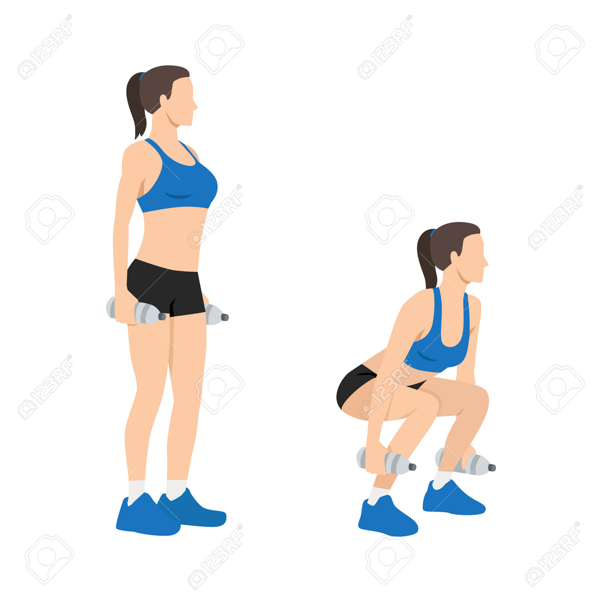
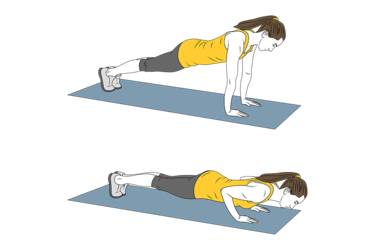
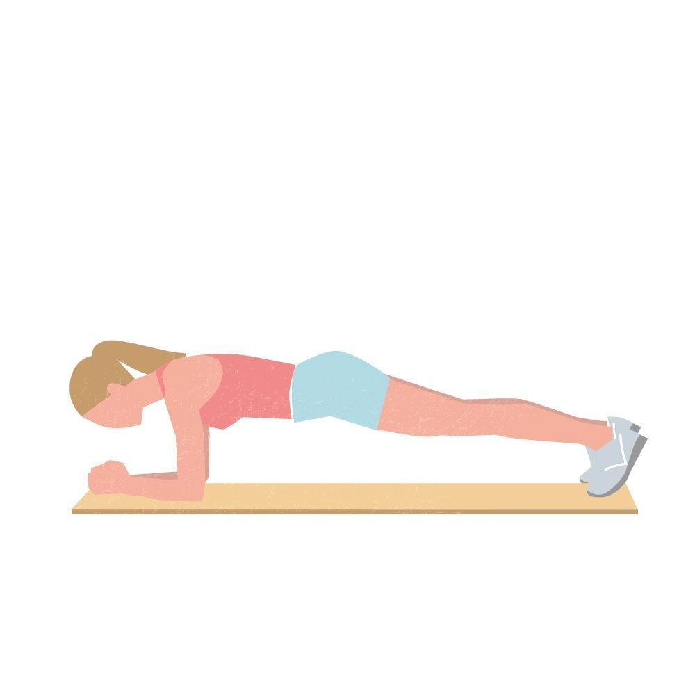
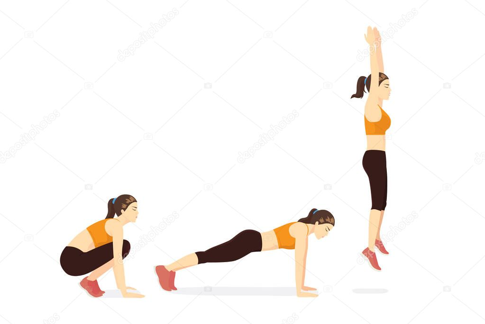

Haz 3 series de 15 a 20 repeticiones cada una, si cuentas con pesas puedes utilizarlas para un mayor estímulo, en caso de no contar con pesas puedes utilizar algún objeto con peso que tengas por casa.
3 series de 10 repeticiones, en caso de que este ejercicio se te dificulte puedes hacer una ligera variación apoyando las rodillas en el suelo y haciendo 15 repeticiones.
Para este ejercicio puedes utilizar mancuernas pequeñas o si no cuentas con ellas puedes usar dos botellas de agua. Realiza 2 series de 10 a 15 repeticiones

En este ejercicio realiza 3 series de un minuto cada una, para aumentar la dificultad puedes aumentar el tiempo de cada serie.
Realizar 3 series de 10 repeticiones, mantener un ritmo constante es importante para hacer correctamente el ejercicio.
Caminar 3 minutos, trotar 2 minutos, repetir 4 veces para un total de 20 minutos. Cada día se incrementaran los minutos totales.

3 series de 15 o 20 repeticiones. Para aumentar la dificultad, puedes hacer los saltos más rápido o aumentar el número de series o repeticiones.

Realizar 2 a 3 series de 8 o 12 repeticiones, como recomendación es importante que la rodilla avance más allá de los dedos de los pies a medida que bajas. Se puede agregar el utilizar unas mancuernas pequeñas

.PNG)